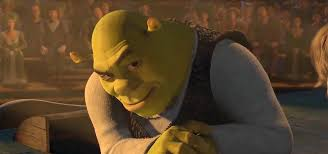
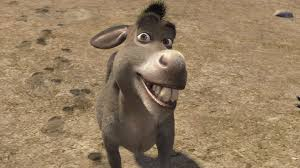
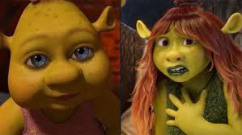

Shrek 5
La paix de Shrek est brisée lorsqu'une sorcière l'avertit que le véritable roi des ogres s'est réveillé. Il découvre bientôt que son marais a disparu, remplacé par un immense cratère. Le responsable est Gorthak, l'Ogre Suprême, un ancien chef qui veut restaurer le règne des ogres et accuse Shrek d'avoir trahi son héritage. Pour sauver leur maison, Shrek, Fiona, l'Âne et le Chat Potté doivent se lancer dans une mission dangereuse : trouver la Couronne des Ogres Anciens, la seule preuve de qui mérite de régner.
Les personnages principaux
- Shrek
<<<<<<< HEAD Notre ogre bien-aimé, Shrek, se retrouve confronté à une nouvelle aventure qui le pousse à redécouvrir son identité et son rôle de père, alors qu'il doit unir sa famille et ses amis pour sauver le royaume de Far Far Away - L'âne
L'Âne, toujours aussi exubérant et fidèle, se lance dans une quête hilarante pour prouver à Shrek qu'il est plus qu'un simple compagnon, tout en cherchant à réaliser son rêve de devenir le héros de sa propre histoire, avec son humour inimitable et son cœur en or. - Felicia
Felicia, se révèle être une jeune femme audacieuse et déterminée, prête à embrasser son héritage d'ogre tout en luttant pour prouver sa valeur en tant que guerrière, tout en naviguant dans les défis de l'adolescence et en cherchant à forger sa propre identité au sein de la famille.
=======
Shrek est un ogre grincheux mais au bon cœur, qui veut juste vivre en paix dans son marais bien-aimé. Bien qu'au début il préfère la solitude, sa vie change complètement lorsqu'il sauve la princesse Fiona et fonde une famille.
- L'âne
L'âne est le compagnon le plus fidèle (et le plus bruyant) de Shrek. Avec sa personnalité charismatique et sa bouche qui ne ferme jamais, il trouve toujours le moyen de se mettre dans le pétrin... et de s'en sortir. - Felicia
Felicia est la fille de Shrek et Fiona, et comme ses parents, bien qu'il ait l'apparence d'un ogre, avec une une grande force, Fiona Jr. a également hérité du caractère courageux et compatissant de sa mère.
>>>>>>> 6ea25cdddf144f68841c0512d4abf0246d2beb38